| 日付 | 2015年3月28日（土） |
|---|---|
| 山域 | 三浦半島 |
| メンバー | 家族（長女・4歳） |
| 山行形態 | 子連れ日帰り |
| アクセス | 電車 |
| ルート (Map) | 北鎌倉駅 (10:02) - (10:36) 天柱峰 - (11:19) 源氏山 - (11:25) 広場 (11:51) - (12:53) 大仏切通分岐 - (13:19) 車道 - (13:37) 高徳院 - (14:28) 由比ヶ浜駅 |
妻と息子が用事で外出予定のため、娘と山に行くことにする。
2人きりなので、久しぶりに電車で行ける山を選択、鎌倉にある源氏山に行く。
北鎌倉駅に到着する。標高25m。
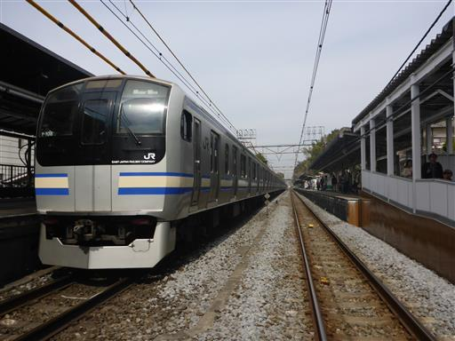
車道を歩いて登山口を目指す。鎌倉方向に向かう道路は混んでいる。
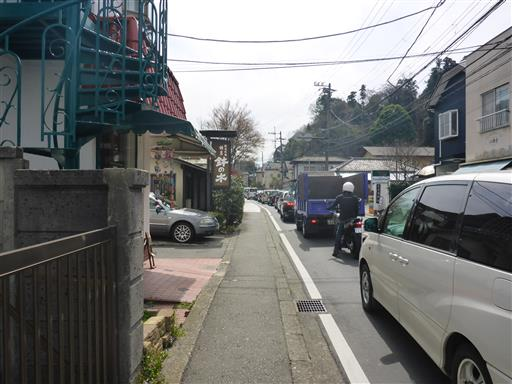
細い路地に入り、ようやく静かになる。
目の前に浄智寺の美しい山門が見えてくる。
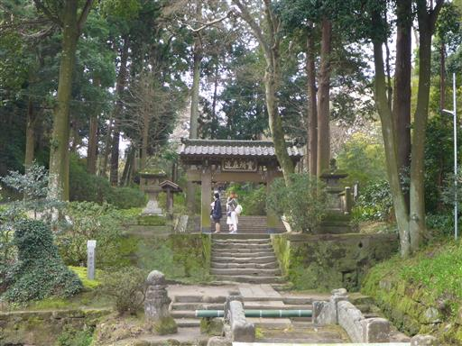
門の前の池には白と黒の鯉が泳いでいる。
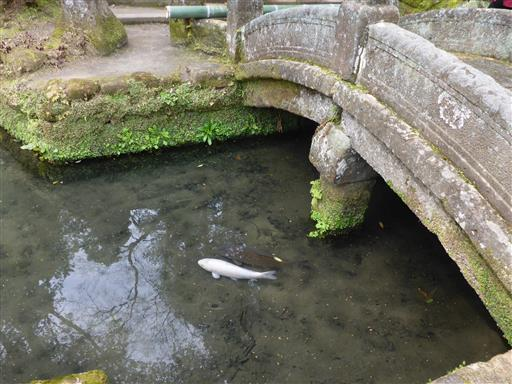
細い路地を歩いていくと、だんだんと道が細くなり、階段が現れる。
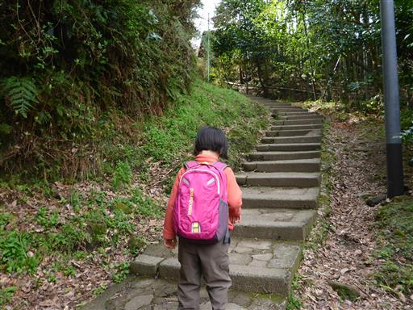
しばらく登ると階段も無くなり、ようやく山道になる。
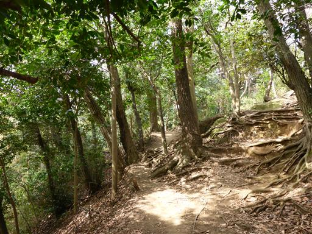
一登りで天柱峰に到着。五重塔と石碑がある。
今日は急かさずに娘のペースに合わせて歩いているので、なかなか前に進まない。
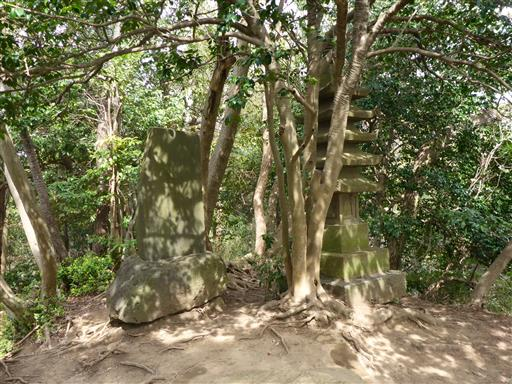
そこからしばらく緩やかな道を歩くと、視界が開けて源氏山公園に到着する。
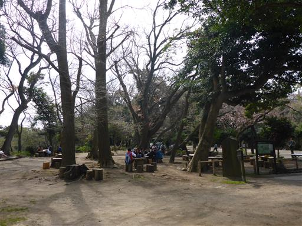
金魚や鯉や亀が飼われている。
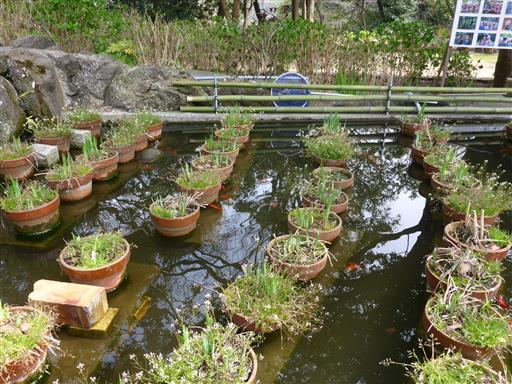
葛原岡神社にお参り。小振りな神社だ。
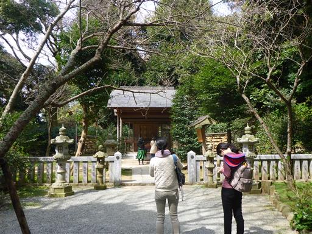
源氏山公園はそれなりに賑わっている。桜は1分咲きといったところだ。
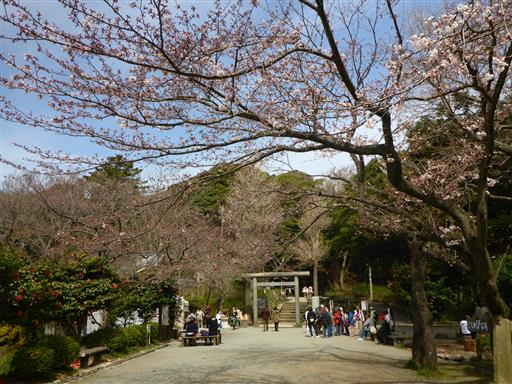
富士山が遠くに薄らと見える。
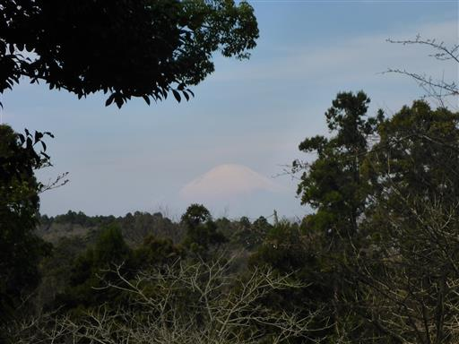
公園内は整備されている。あまり山の中という感じはしない。
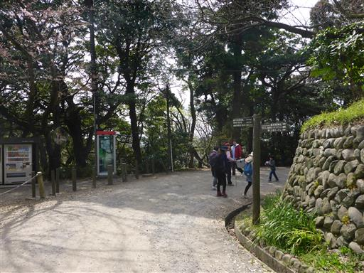
真っ赤な椿。何という品種か分からないが、鮮やかな色だ。
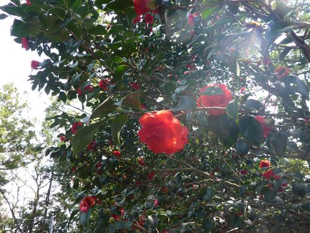
クスノキの大木。幹回り2.8mだ。
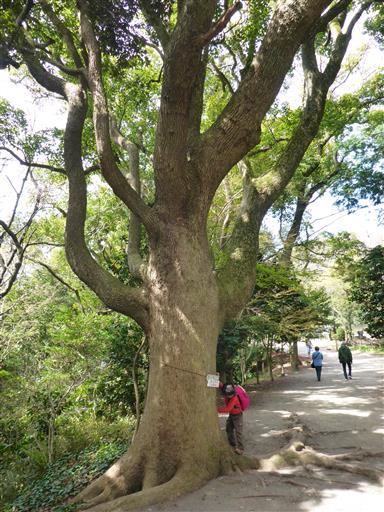
源頼朝の銅像が置かれている。鎌倉幕府を開いた人物だ。
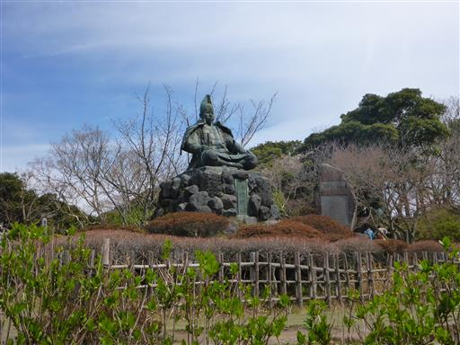
足元にスミレの花が咲いている。
少し前まで厳冬だったのに、今や春爛漫だ。
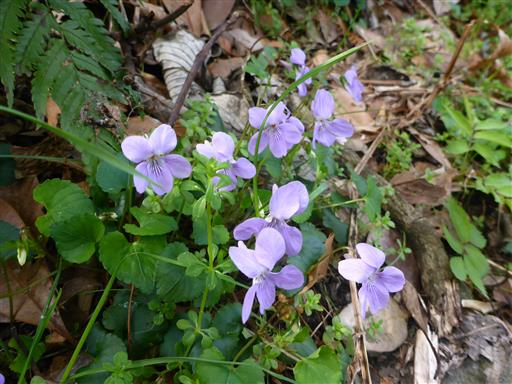
賑やかな公園から人気の少ない階段を登っていくと、源氏山の山頂に到着する。標高93m。
山頂標識は見当たらないが、ここが山頂で間違いなさそうだ。
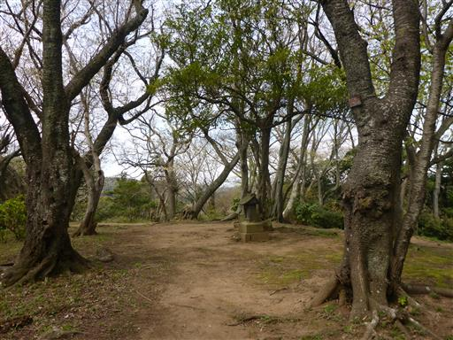
辺りにはハナニラの花がたくさん咲いている。
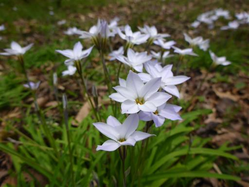
山頂直下の広場で昼食をとる。今日は暖かいので気持ちが良い。
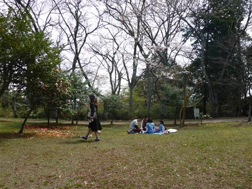
昼食をとったら源氏山公園を離れて大仏コースに入っていく。
木にリスを発見。こちらが近づいても、全然気づいていない。
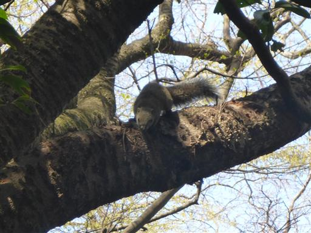
視界が開けて、鎌倉の街と海が眼下に見える。
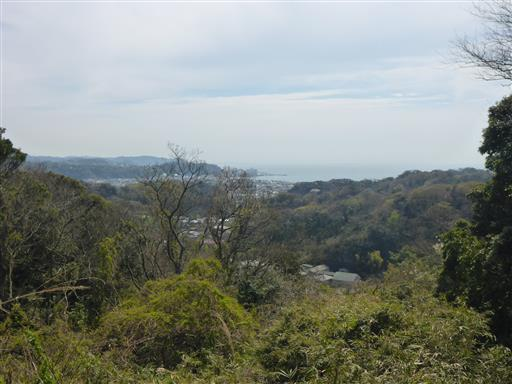
分岐点で下山道と分かれ、少し足を延ばして大仏切通に向かう。
山を切り開いて作られた古道で、鎌倉七口の1つだ。
両側は切り開かれた崖に囲まれている。
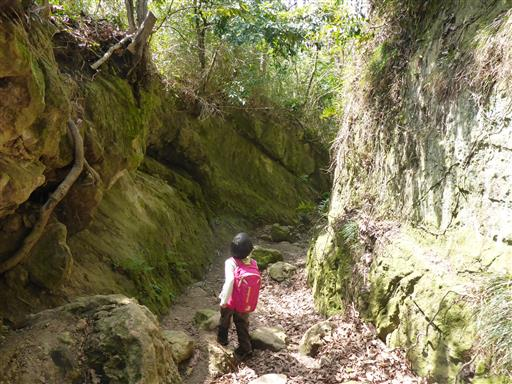
大きな岩の庇が出来ている。
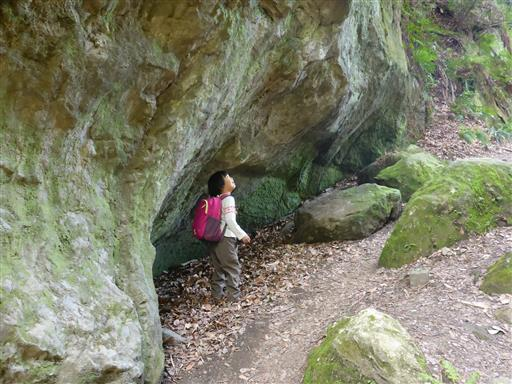
この辺りは苔が多い。最近雨が降っていないため、触るとふわふわだ。
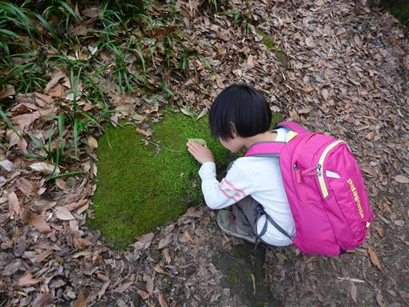
下山し、車道に出てくる。
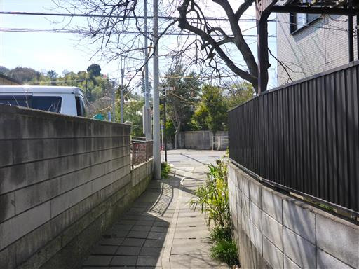
大仏切通と並行して車道が走っている。こちらの道路も車通りが多い。
大仏隧道を抜けると大仏コースの下山地点に合流だ。
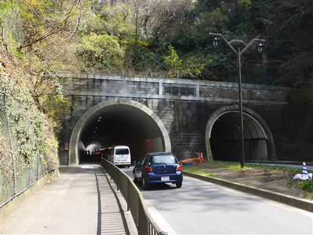
せっかくなので鎌倉大仏のある高徳院に寄り道する。
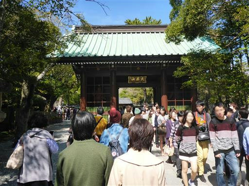
券売所を見るとすごく人が並んでいる。
鎌倉大仏は一度行ったことがあるし、娘もさして興味がなさそうなのでパスする。
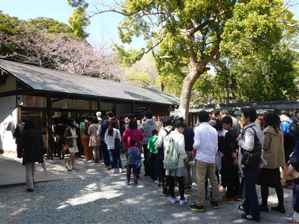
車道も歩道も大混雑。何故、鎌倉はこんなにも混雑するのだろう…？
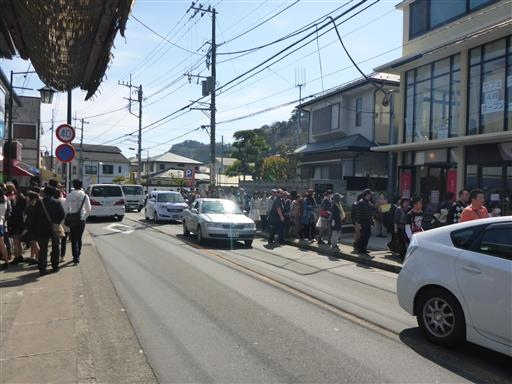
鎌倉ジェラートでアイスクリームを食べて少し休憩する。
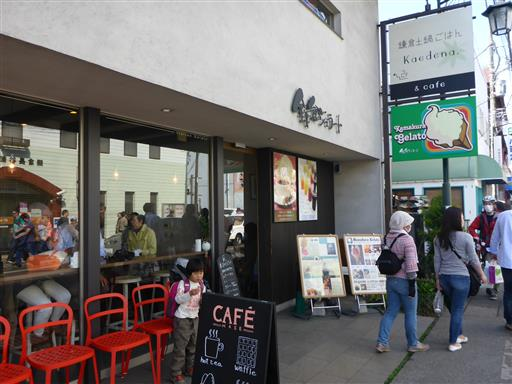
パン屋に寄り道して明日の朝食を買って、由比ヶ浜駅に到着。標高10m。
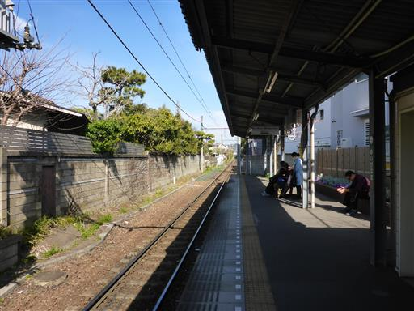
ここは江ノ電の駅。反対方向の藤沢行の電車は大混雑。
そして、鎌倉行の電車も通勤ラッシュ並みの大混雑だ。
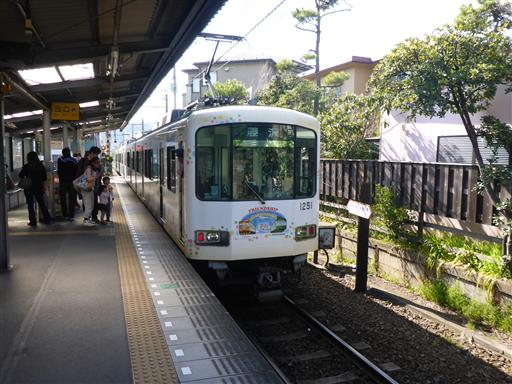
鎌倉駅に到着。どこもかしこも人人人だ。
今日は1時間半のコースなのだが、娘のペースに合わせていると3時間かかってしまった。
荷物が軽いとはいえ、しょっちゅう立ち止まっていると、結構疲れてしまった。
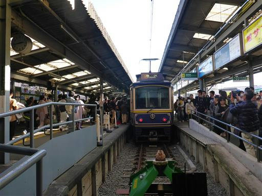